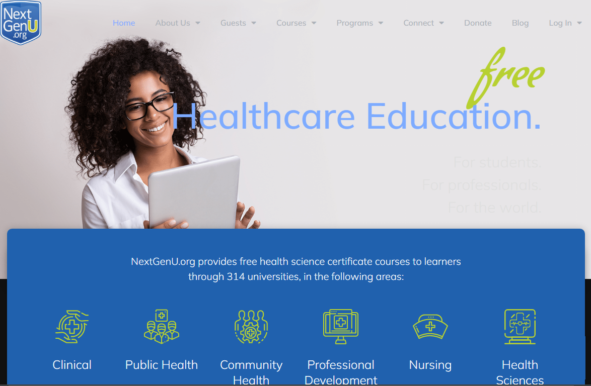
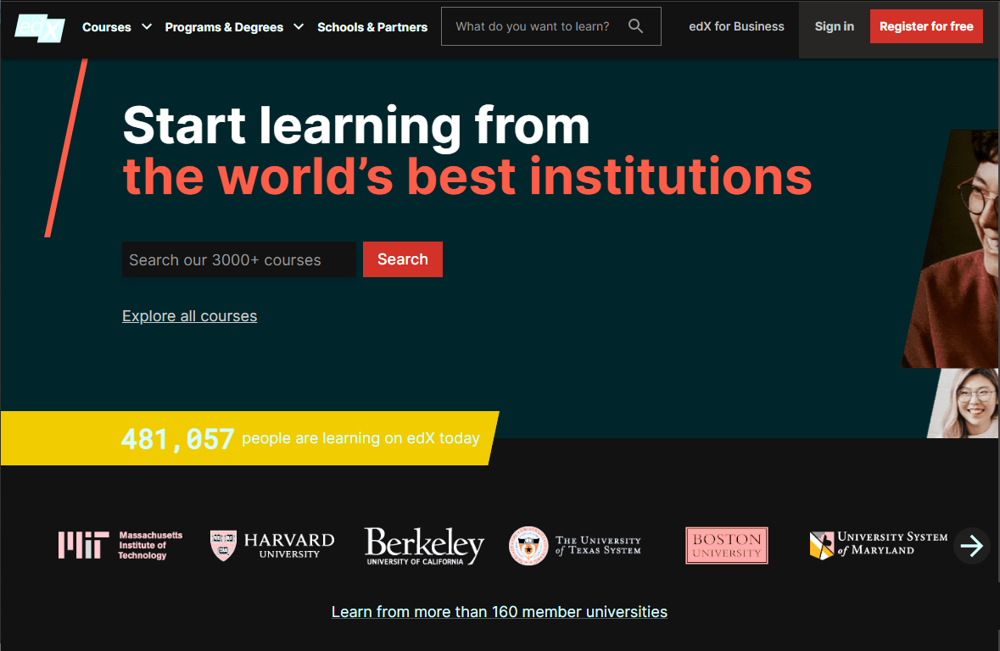
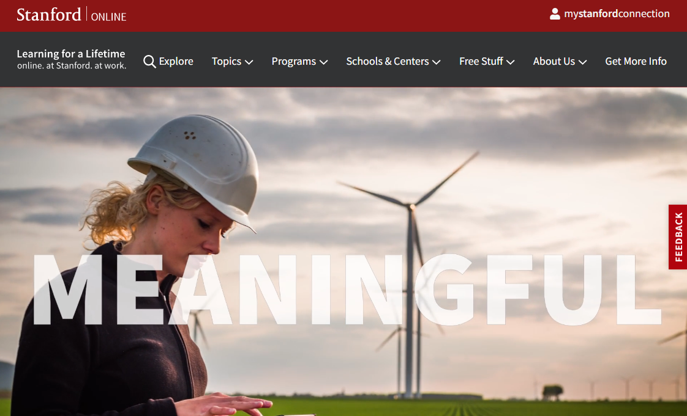
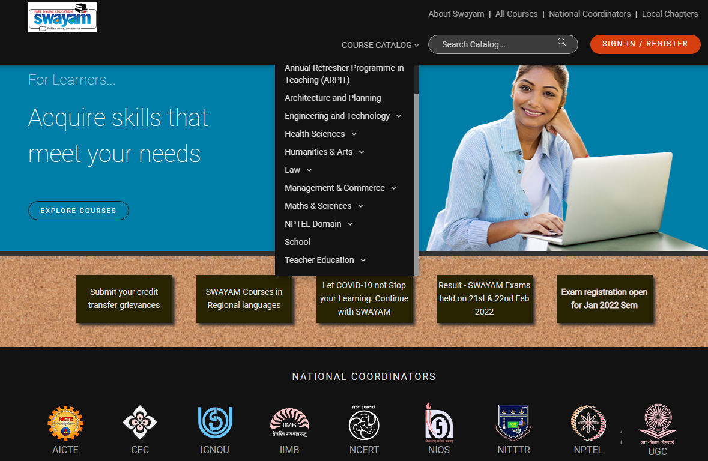

Institute for Equality in Development Innovations
Welcome to I-EDI's new English site: 2023 updates in progress
I-EDI is the English branch of 傈僳联合社区开发会, with growing global activities in English as we restructure to meet needs during and after the COVID-19 pandemic.
With our roots in international development, I-EDI aims to support equality, through supporting:
1. People living with disabilities
2. Survivors/victims of trauma
3. Marginalized communities - indigenous, or rural
4. Individuals experiencing multiple disadvantages listed above
Current public initiatives are detailed in the following links. For a list of initiatives open to our partners (small grants etc.), please reach out to your organization's I-EDI point-of-contact.
I-EDI Education: Personal Accessibility Staff
Individuals living with disabilities, trauma, or marginalized-status often face barriers in accessing higher education. In turn, barriers in education results in barriers to employment. Even though individuals living with disabilities, trauma, or marginalized-status have tremendous lived experience to inform their positions as teachers, researchers, or academics in their respective fields, this lived experience is often invalidated due to pre-existing barriers in education. I-EDI believes every person's lived experience is valid, and supports equal-access to education - to place individuals living with disabilities, trauma, or marginalized-status in employment that is dignifying and capable of breaking cycles of poverty.
Currently, tuition-free, and open-access education opportunities exist for individuals interested in higher education. These opportunities are available to all, but individuals living with disabilities, trauma, or marginalized-status may still face unique, individualized barriers.
I-EDI seeks to bridge the gap by providing Personal Accessibility Staff - to meet accessibility needs for individuals living with vision-impairment, hearing-impairment, and other barriers to information-access. The I-EDI PAS provides a personalized experience for individuals seeking to complete degrees, offering support in either Chinese (Mandarin) and/or English. The entire process, from application to completion, is cost-free to all.
I-EDI aims to fill a second gap of post-degree support: for students who successfully earn degrees, students may be left on their own to understand how to best use their newly-earned degrees. With the ultimate goal of placing individuals living with disabilities, trauma, or marginalized-status in employment which respects their lived experience as valid knowledge, I-EDI PAS provides networking and informational support. In most cases, I-EDI is limited in our capacity to place individuals in their ultimate employment of choice (EoC); regardless, we seeks to link students to next-step degrees (accessible PhDs for Masters graduates; accessible Masters for Bachelors graduates), or, internships which can lead to their EoC. In all cases, I-EDI seeks to place individuals in internships beyond the academic level required for I-EDI's Digital Contracts.
I-EDI Personal Assistance Staff also is here to help students with disabilities; backgrounds of trauma; or maringalized-status
in navigating the available tuition-free options from existing accredited higher-education initiatives below.
NextGenU

Founders:
World Health Organization; World Bank; NATO Science for Peace; Institute for Lifestyle Medicine at Harvard; World Medical Association; American College of Preventative Medicine and others
Subjects:
health; medicine; humanitarianism and international development; teacher's education
Number of Universities:
316
Number of Courses Available:
~50
Accreditation:
by Euclid University
Fee Navigation Status:
This open-education initiative includes portions that incur fees or payment. For students wishing
only to access tuition-free education, the I-EDI PAS will assist students to
help ensure no costs are incurred by accident.
EdX

Founders:
Harvard; MIT
Number of Universities:
160
Number of Courses Available:
3600+
Accreditation:
by member university
Fee Navigation Status:
This open-education initiative includes portions that incur fees or payment. For students wishing
only to access tuition-free education, the I-EDI PAS will assist students to
help ensure no costs are incurred by accident.
Stanford Online

Founders:
Stanford
Number of Courses Available:
90+
Accreditation:
by Stanford
Fee Navigation Status:
This open-education initiative includes portions that incur fees or payment. For students wishing
only to access tuition-free education, the I-EDI PAS will assist students to
help ensure no costs are incurred by accident.
SWAYAM

Founders:
Ministry of Human Resource Development, Government of India
Number of Universities:
200+ Institute
Number of Courses Available:
1000~2000
Accreditation:
by Ministry of Education, Government of India
Fee Navigation Status:
This open-education initiative includes minimal portions that incur fees or payment (ie.
local testing in India).
To Apply for an Personal Accessibility Staff, please send an introduction to:
I-EDI PAS
admin@i-edi.org
*There is no cost involved throughout the entire process. The application assists us to identify the best accessibility supports to suit individualized situations.
For individuals with difficulty accessing email, please feel free to drop a message in this link